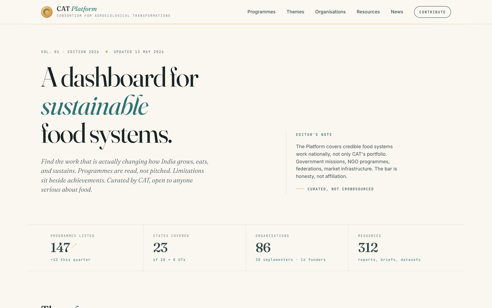
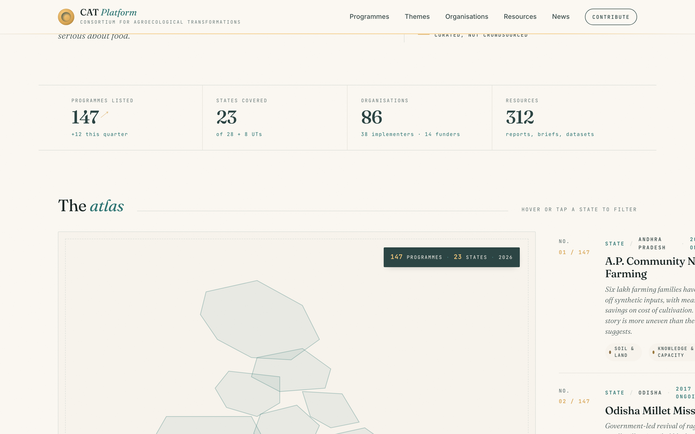
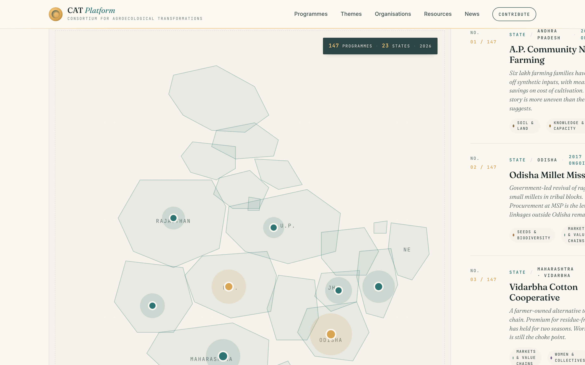
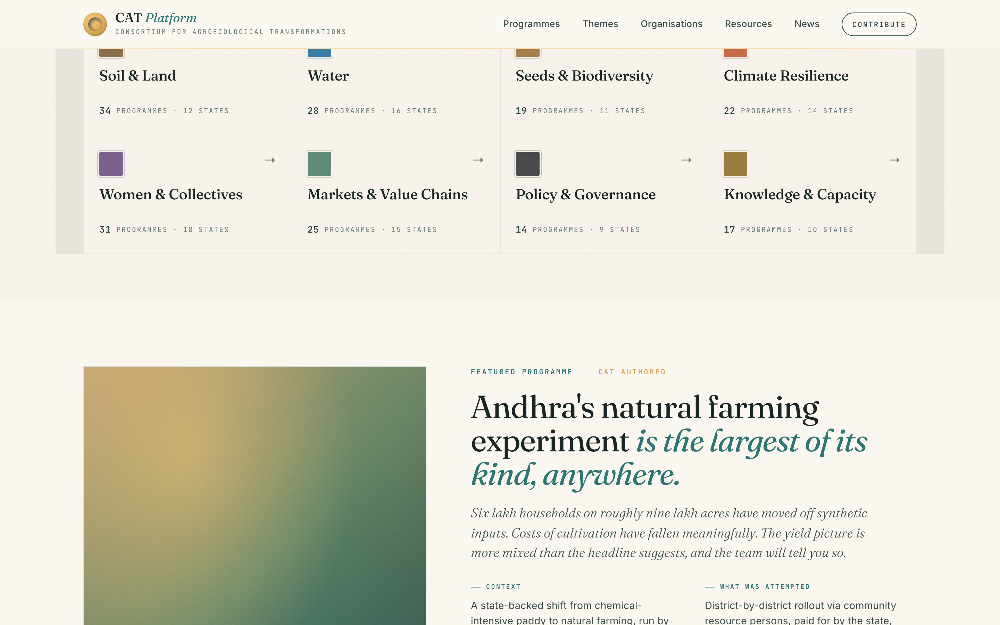
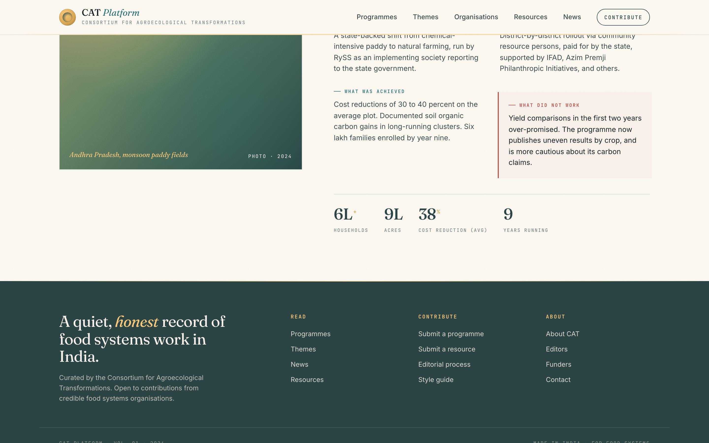
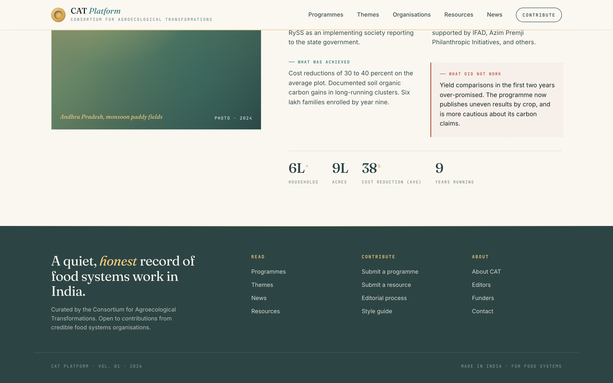
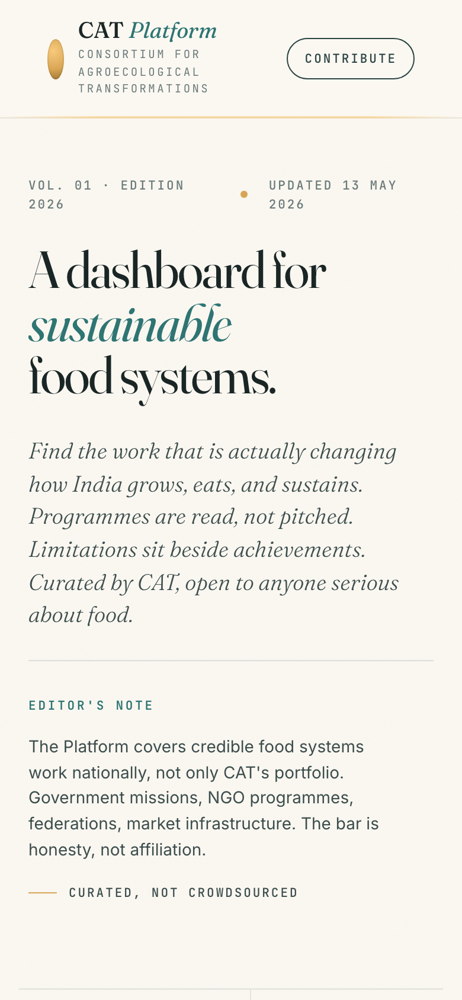
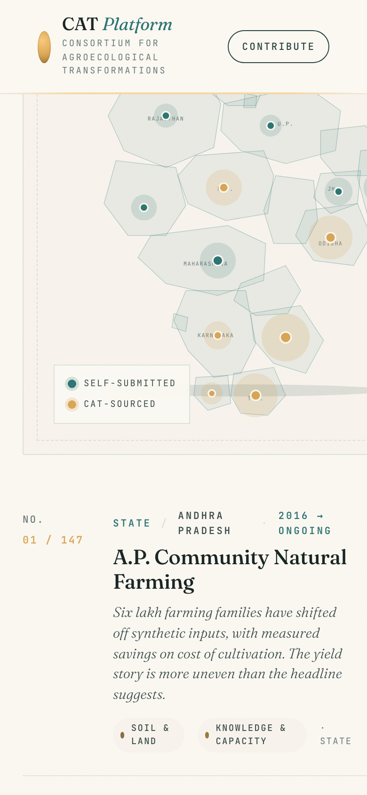
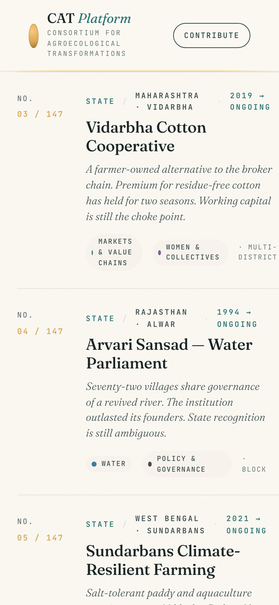
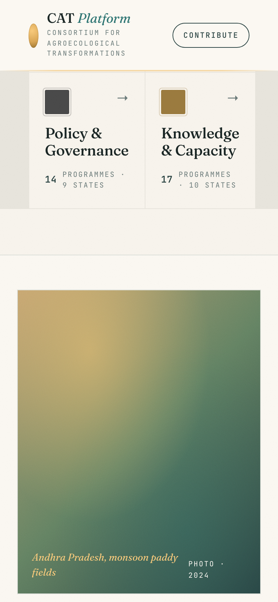

No. 01 / 11GJ
Ahwa
Dang tribal belt in Gujarat. Forest-fringe agriculture and minor millets.
An editorial record of credible food-systems work in India. Curated by CAT. Open to anyone serious about food.
The Platform documents programmes that are actually changing how India grows, eats, and sustains. Programmes are read, not pitched. Limitations sit beside achievements. Curated by CAT, open to the broader food-systems fraternity.
A collaborative platform working to enable agroecological transformation at scale across India — surfaced for funders, NGOs, researchers, and policy actors as a single, defensible reading surface.
It must not look like a SaaS dashboard, an observability tool, a Notion page, a Medium article, a generic Tailwind starter, an AI-chat product, or a fintech landing page. It is an editorial publication: The Atlantic meets Our World in Data meets Stripe Press.
Quick-glance, link-driven, never register. Treat them like senior readers who arrived from a meeting.
Use it for cross-learning. Will read deeply. Will care about "what did not work" more than headlines.
Follow citations and resources. Need shareable, citable URLs and downloadable references.
Light usage. Occasional deep dive when a state mission overlaps with their brief.
✓ “Find the work that is actually changing how India grows, eats, and sustains.”
✗ “Discover transformative initiatives reshaping Indian food systems.”
✓ “Yield comparisons in the first two years over-promised. The team now thinks four years is too short for a defensible carbon claim.”
✗ “We encountered some challenges around our soil regeneration KPIs.”
A live local build with the full v1 surface area: editorial landing, atlas, entry detail with four narrative blocks, themes, organisations, eleven landscapes, news, resources, search, agent preview, admin desk, and contribution flow. Real CAT brand palette + official logo + ten thematic SVG icons.










CAT enables agroecological transformation by aligning three levers — policy, markets, and finance — to support community-led adoption and long-term transitions.
Schemes that work for smallholders. Regulation that opens space for agroecology. Institutions that hold the system together over many years.
Procurement at fair prices. Processing and aggregation that earn the producer a margin. Traceability that survives the broker chain.
Patient capital. Blended financing for landscape-scale work. Working-capital instruments built around farmer-collective realities, not commercial banking norms.
80-150 curated trusted URLs (state agri depts, NABARD/IFAD, partner reports). Crawled, hashed, diffed.
Claude with web search, allowlisted to .gov.in / .org / news. Surfaces new candidate programmes.
Kimi reads sources, drafts the five narrative blocks with citation anchors. Editor sees source ↔ draft side-by-side.
Nothing publishes without a human approval. Every change recorded in entry_revisions.
cat schemapg driverpg chosen for IPv6 support.Putting a real URL in front of funders this month, with editors doing curation by hand. Mostly content + deployment, not engineering.
A companion PRD-questions doc enumerates every locked decision (positioning, content sourcing, AI authoring depth, freshness, endorsement tiers, map fidelity, palette, motion, three levers, eleven landscapes, etc.) and phrases each one back as a question for the team to confirm or revise.
docs/PRD-questions.md · 14 sections · ~40 decisions
The point of the doc: the team should disagree with at least 3-5 items, because that disagreement is where the strongest signal lives.
Questions, disagreements, revisions — bring them.
The whole point of v1 is that the team should push back.